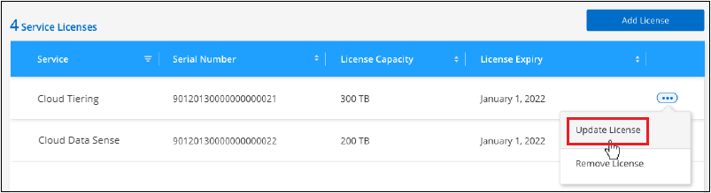

要求變更文件
要求變更文件 編輯此頁面
編輯此頁面 瞭解如何作出貢獻
瞭解如何作出貢獻設定雲端分層授權
在您從第一個叢集設定分層時、就會開始免費試用30天的雲端分層。在免費試用結束後、您必須透過雲端供應商的市場訂閱隨用隨付的Cloud Manager、NetApp的BYOL授權、或兩者的組合、來支付Cloud Tiering的費用。
在閱讀更多內容之前、請先提供幾個附註：
-
如果您已在雲端供應商的市場訂閱Cloud Manager（PAYGO）、那麼您也會自動從內部部署ONTAP 的悉尼系統訂閱Cloud Tiering。您會在Cloud Tiering * Licensing*（雲端分層*授權*）標籤中看到使用中的訂閱。您不需要再次訂閱。
-
BYOL Cloud分層授權是一個_浮 點型授權、您可以在ONTAP Cloud Manager帳戶的多個內部部署的物件叢集之間使用。這與您過去為FabricPool 每個叢集購買_SUR__授權的情況不同。
-
將資料分層至StorageGRID 不收費、因此不需要BYOL授權或PAYGO登錄。此階層式資料不會計入您授權中所購買的容量。
使用Cloud Tiering PAYGO訂閱
透過雲端供應商市場的隨用隨付訂閱、您可以授權使用Cloud Volumes ONTAP 多方面的系統及雲端資料服務、例如雲端分層。
從 AWS Marketplace 訂閱
從 AWS Marketplace 訂閱 Cloud Tiering 、即可設定隨用隨付訂閱、將資料從 ONTAP 叢集分層到 AWS S3 。
-
在 Cloud Manager 中、按一下 * 分層 > 授權 * 。
-
按一下 AWS Marketplace 下的 * 「訂購 * 」、然後按一下「 * 繼續 * 」。
-
從訂閱 "AWS Marketplace"、然後重新登入Cloud Central以完成註冊。
下列影片顯示此程序：
從 Azure Marketplace 訂閱
從 Azure Marketplace 訂閱 Cloud Tiering 、即可設定隨用隨付訂閱、以將資料從 ONTAP 叢集分層到 Azure Blob 儲存設備。
-
在 Cloud Manager 中、按一下 * 分層 > 授權 * 。
-
按一下 Azure Marketplace 下的 * 「訂購 * 」、然後按一下 * 「繼續 * 」。
-
從訂閱 "Azure Marketplace"、然後重新登入Cloud Central以完成註冊。
下列影片顯示此程序：
從 GCP Marketplace 訂閱
從 GCP Marketplace 訂閱 Cloud Tiering 、即可設定隨用隨付訂閱、以將資料從 ONTAP 整套叢集分層到 Google Cloud 儲存設備。
-
在 Cloud Manager 中、按一下 * 分層 > 授權 * 。
-
按一下「 GCP Marketplace 」下的「 * 訂購 * 」、然後按一下「 * 繼續 * 」。
-
從訂閱 "GCP 市場"、然後重新登入Cloud Central以完成註冊。
下列影片顯示此程序：
使用Cloud Tiering BYOL授權
NetApp自帶授權、提供2、12、24或36個月的期限。BYOL * Cloud Tiering *授權是一個_浮 點型授權、您可以在ONTAP Cloud Manager帳戶的多個內部部署的叢集之間使用。雲端分層授權中定義的總分層容量會在內部部署叢集*全部*之間共享、讓初始授權與續約變得更簡單。
如果您沒有雲端分層授權、請聯絡我們以購買：
-
mailto：ng-cloud-tiering@netapp.com？Subject =授權[傳送電子郵件以購買授權]。
-
按一下Cloud Manager右下角的聊天圖示以申請授權。
或者、如果Cloud Volumes ONTAP 您擁有不使用的未指派節點型支援、您可以將其轉換成具有相同金額等同和相同到期日的雲端分層授權。 "如需詳細資料、請前往此處"。
您可以使用Cloud Manager中的「Digital Wallet」頁面來管理雲端分層BYOL授權。您可以新增授權並更新現有授權。
新的雲端分層BYOL授權自2021年8月21日起生效
全新的*雲端分層*授權於2021年8月推出、適用於使用雲端分層服務的Cloud Manager所支援的分層組態。Cloud Manager目前支援分層至下列雲端儲存設備：Amazon S3、Azure Blob儲存設備、Google Cloud Storage、S3相容物件儲存設備、IBM Cloud Object Storage及StorageGRID
您過去將內部部署的內部資料分層保存到雲端時、可能FabricPool 使用的*《環》授權ONTAP 僅適用於ONTAP 無法存取網際網路（又稱為「暗點」）的站台、MetroCluster 或使用FabricPool 「鏡射鏡射」的非執行系統。如果您使用這些組態、您將FabricPool 會使用System Manager或ONTAP CLI、在每個叢集上安裝一個版本資訊技術授權。

|
請注意、分層至StorageGRID 不需要FabricPool 使用功能不全的或雲端分層授權。 |
如果您目前使用FabricPool 的是「非功能性授權」、FabricPool 則除非您的不含功能性授權達到到期日或最大容量、否則不會受到影響。如需更新授權、請聯絡NetApp、或是更早更新授權、以確保您將資料分層至雲端的能力不會中斷。
-
如果您使用的是Cloud Manager支援的組態、FabricPool 則您的支援將轉換成Cloud Tiering授權、這些授權將會顯示在Digital Wallet中。當初始授權過期時、您需要更新雲端分層授權。
-
如果您使用Cloud Manager不支援的組態、則將繼續使用FabricPool 此版的支援。 "瞭解如何使用System Manager授權分層"。
以下是兩份授權的一些須知事項：
| 雲端分層授權 | 不含授權FabricPool |
|---|---|
這是一個_浮 點_授權、可在多ONTAP 個內部部署的叢集上使用。 |
這是您為_Every叢集購買及授權的每個叢集授權。 |
它已在Digital Wallet的Cloud Manager中註冊。 |
它會套用至使用System Manager或ONTAP CLI的個別叢集。 |
分層組態與管理是透過Cloud Manager中的雲端分層服務來完成。 |
分層組態與管理是透過System Manager或ONTAP CLI來完成。 |
設定完成後、您可以使用免費試用版、在30天內不需授權的情況下使用分層服務。 |
設定完成後、即可免費分層前10 TB的資料。 |
取得您的雲端分層授權檔案
購買Cloud Tiering授權之後、您可以在Cloud Manager中輸入Cloud Tiering序號和nss帳戶、或是上傳NLF授權檔案、以啟動授權。下列步驟說明如果您打算使用NLF授權檔案、該如何取得該檔案。
-
登入 "NetApp 支援網站" 然後按一下*系統>軟體授權*。
-
輸入您的雲端分層授權序號。

-
在*授權金鑰*下、按一下*取得NetApp授權檔案*。
-
輸入您的Cloud Manager帳戶ID（在支援網站上稱為「租戶ID」）、然後按一下*提交*下載授權檔案。

您可以從Cloud Manager頂端選取* Account*下拉式清單、然後按一下帳戶旁的* Manage Account*、即可找到Cloud Manager帳戶ID。您的帳戶ID位於「總覽」索引標籤。
將雲端分層BYOL授權新增至您的帳戶
為Cloud Manager帳戶購買雲端分層授權後、您必須將授權新增至Cloud Manager、才能使用Cloud Tiering服務。
-
按一下「所有服務>數位錢包>資料服務授權」。
-
按一下「 * 新增授權 * 」。
-
在_新增授權_對話方塊中、輸入授權資訊、然後按一下*新增授權*：
-
如果您有分層授權序號、而且知道您的nss-Account、請選取* Enter Serial Number*（輸入序號*）選項、然後輸入該資訊。
如果您的NetApp支援網站帳戶無法從下拉式清單取得、 "將新增至Cloud Manager的NSS帳戶"。
-
如果您有分層授權檔案、請選取*上傳授權檔案*選項、然後依照提示附加檔案。

-
Cloud Manager會新增授權、讓您的雲端分層服務處於作用中狀態。
更新雲端分層BYOL授權
如果您的授權期限即將到期、或您的授權容量已達到上限、您將會在Cloud Tiering中收到通知。

此狀態也會顯示在「數位錢包」頁面中。

您可以在雲端分層授權到期之前更新、如此一來、您就不會中斷將資料分層至雲端的能力。
-
按一下Cloud Manager右下角的聊天圖示、即可針對特定序號、要求將您的期限延長或增加至Cloud Tiering授權的容量。
在您支付授權費用並向NetApp支援網站註冊之後、Cloud Manager會自動更新Digital Wallet中的授權、而Data Services授權頁面將會在5到10分鐘內反映變更。
-
如果Cloud Manager無法自動更新授權、則您必須手動上傳授權檔案。
-
您可以 從NetApp支援網站取得授權檔案。
-
在「資料服務授權」索引標籤的「數位錢包」頁面上、按一下
 如需您要更新的服務序號、請按一下*更新授權*。
如需您要更新的服務序號、請按一下*更新授權*。
-
在「更新授權」頁面上傳授權檔案、然後按一下「更新授權」。
-
Cloud Manager會更新授權、讓您的雲端分層服務持續運作。
將雲端分層授權套用至特殊組態的叢集
下列組態的叢集可使用雲端分層授權、但套用授權的方式必須不同於一般的單節點和HA組態的等叢集：ONTAP ONTAP
-
分層鏡射組態中的叢集（連接至兩個物件存放區的叢集）
目前不支援使用「鏡射」的組態MetroCluster FabricPool
-
將資料分層至IBM Cloud Object Storage的叢集
現有叢集的程序FabricPool 、若叢集具有不含更新授權
當您 "在雲端分層中探索這些特殊的叢集類型"、Cloud Tiering可辨識FabricPool 出此功能的不一致性、並將授權新增至Digital Wallet。這些叢集將繼續如常分層資料。當「不適用」授權到期時、您必須購買雲端分層授權。FabricPool
新建立叢集的程序
當您在雲端分層中發現典型叢集時、就會使用雲端分層介面來設定分層。在這些情況下、會發生下列動作：
-
「父」雲端分層授權會追蹤所有叢集用於分層的容量、以確保授權有足夠的容量。總授權容量和到期日會顯示在Digital Wallet中。
-
每個叢集都會自動安裝「子」分層授權、以便與「父」授權通訊。

|
系統管理員或ONTAP CLI中顯示的「子」授權容量和到期日並非真實資訊、因此若資訊不相同、請勿擔心。這些價值是由Cloud Tiering軟體內部管理。實際資訊會在Digital Wallet中追蹤。 |
對於上述兩種組態、您需要使用System Manager或ONTAP CLI（而非使用Cloud Tiering介面）來設定分層。因此在這些情況下、您必須從雲端分層介面手動將「子」授權推送至這些叢集。
請注意、由於資料已分層至兩個不同的物件儲存位置、以供分層鏡射組態使用、因此您必須購買具有足夠容量的授權、才能將資料分層至兩個位置。
-
使用System Manager或CLI安裝及設定ONTAP 您的靜態叢集ONTAP 。
此時請勿設定分層。
-
"購買雲端分層授權" 以取得新叢集或叢集所需的容量。
-
在Cloud Manager中、 "將授權新增至Digital Wallet"。
-
在雲端分層、 "探索新叢集"。
-
在叢集儀表板中、按一下
針對叢集、選取*部署授權*。 -
在「部署授權」對話方塊中、按一下「部署」。
子授權會部署至ONTAP 整個叢集。
-
返回System Manager或ONTAP the不確定的CLI、然後設定分層組態。